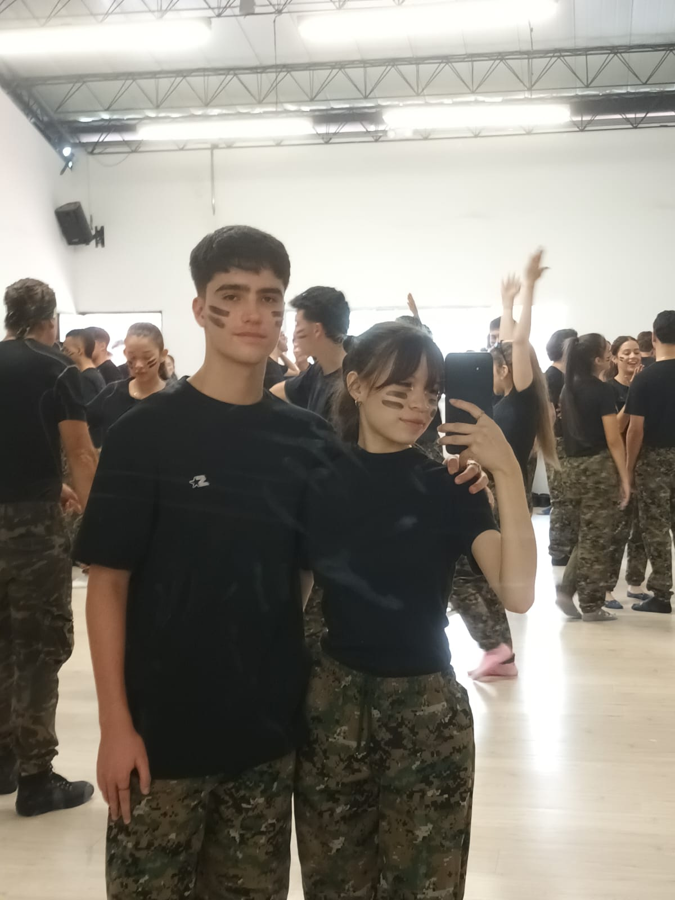

¡Hola Sammy!
Hoy, en nuestro décimo mes juntos, quiero tomar un momento para expresarte todo lo que siento por ti. No puedo evitar sonreír al recordar cómo comenzó nuestra historia de amor y cómo ha crecido cada día desde entonces. Eres mi luz, mi alegría y la persona que ha transformado mi vida de una manera indescriptible.
Desde el momento en que te conocí, supe que eras especial. Tu sonrisa ilumina mi mundo y tu forma de ser me cautiva. Me enamoré perdidamente de ti, de tus imperfecciones que encajan perfectamente con las mías y de la conexión única que compartimos. Eres la persona con la que me siento más yo mismo, sin barreras ni máscaras.
Quiero que sepas que te amo con todo mi corazón. Tu presencia en mi vida ha traído una felicidad que no puedo expresar con palabras. Eres mi confidente, mi compañera de aventuras y mi apoyo incondicional. Me has mostrado el verdadero significado del amor y la importancia de tener a alguien especial a tu lado.
Siento una gran gratitud por tenerte en mi vida y valoro cada momento que hemos compartido juntos. Pero también quiero pedirte perdón por mis errores y por cualquier dolor que haya causado. No soy perfecto y cometo errores, pero quiero que sepas que siempre estoy dispuesto a mejorar y a ser el hombre que mereces.
Prometo trabajar en mí mismo y en nuestra relación. Me comprometo a ser un compañero más comprensivo, cariñoso y atento. Quiero ser alguien en quien puedas confiar plenamente y que te haga sentir amada y valorada todos los días.
Me imagino un futuro maravilloso a tu lado, construyendo una vida llena de amor, risas y aventuras. Cada vez que cierro los ojos, veo un horizonte lleno de posibilidades y no puedo evitar sonreír al pensar que tú estarás allí a mi lado. Eres mi confidente, mi amiga y mi amor verdadero, y no puedo esperar para compartir cada momento de nuestras vidas juntos.
Gracias por ser la persona maravillosa que eres y por amarme a pesar de mis imperfecciones. Eres mi fuerza, mi inspiración y mi razón para ser una mejor versión de mí mismo. Estoy emocionado por el futuro que nos espera y por todo lo que aún tenemos por descubrir.
Felices 10 meses, mi amor. Te amo más de lo que las palabras pueden expresar y siempre estaré aquí para ti. Eres mi persona especial, mi todo.
En honor a nuestros 10 meses, quiero recordar algunos de esos momentos especiales que hemos vivido juntos. Aquí tienes algunas de nuestras fotos:
Recuerdo que está fue nuestra primera foto que nos tomamos juntos. Cada vez que la veo,
pienso en esos momento de amistad tan especiales para nosotros, de donde pasamos de
compañeros a buenos amigos.

En esta foto ya éramos novios, recuerdo que era el día de la Antioqueñidad. Admito que
era muy penosito y tímido, pero me sentía muy enamorado de tí, veía en tus ojos la mujer
más increíble que hubiera conocido
Esta foto fue el 9 de Septiembre del año pasado. Fue el día que te ragelé a Ramón,
¿Lo recuerdas?. La primera vez que lo ví, me acordé de que te gustaban las ranitas,
y pensé que era el regalo perfecto para tí. Así fue que tuvimos nuestro primer hijo.

Siempre en el colegio nos tomabamos fotos graciosas, pero esta, es muy especial para
mi. Recuerdo que en ese momento la profesora de religión nos regañó porque estábamos
traviesos en su clase.

Ese día me sentía muy feliz contigo, no solo por comer juntos después del colegio, si no
poruque fue la primera vez que comías en Burger King. Me sentía como un papi orgulloso
llevando a su hija a comer. Además de eso, ese día nos fuimos caminando juntos a casita
Diría que lo peor de ese día fue cuando el portero en tu unidad nos encontró haciendo cositas
un poco fuera de lo normal, pero admito que me gustó la adrenalina del momento.
Bueno, diría que esta fue la mejor cita que hemos tenido en tu casita, hicimos algo inolvidable
que ambos queríamos hacer desde hace tiempo. Me hiciste skincare y me diste muchos besitos.
Pasamos toda la tarde juntos, y en todo ese tiempo me sentía uno contigo.

Recuerdo que ese día antes de que fueras a mi casita, fui a visitarte a tu portería. Me dijiste
que no tenías comidita en casa y que tenías hambrecita. Por eso, tuve la idea de invitarte a
almorzar en mi casita. Comimos pasta con brócoli y pollito, te gustaron mucho. Ese día la pasé
genial contigo, nos reímos y nos tomamos fotitos juntos.
Último día de clases, ¿cómo olvidarlo?, teníamos nuestra presentación y me sentía muy nervioso,
pero a la vez me sentía muy feliz por bailar a tu lado, aunque no fuera el mejor haciéndolo.
Tengo que admitirte que te veías hermosa ese día (como siempre), parecías una modelo.
También recuerdo que me sentía muy triste por dejar atrás toda la etapa del colegio, pero tú
viniste a consolar mi llanto, me cuidaste y me calmabas diciendo que todo estará bien, y así fue.
Día de la cena, día donde fuimos vestidos de gala al colegio. Déjame admitirte que fue la primera
que te ví demasiado hermosa, ¡Dios!, cuando estabas bajando por las escaleras de tu portería, me
derretía por dentro y me sentía muy apenado, así como cuando empazabamos nuestras relación.
Ese día comimos muy rico, bailamos juntos, reímos juntos, fuimos a granvía, te cargué en mi espalda
y brazos; parecíamos una pareja de esposos pasando un buen rato juntos.
El día más esperado del año, el día de nuestra graduación. Además de sentirme ordulloso por todo el
esfuerzo hecho por mi en todo el año, me sentía muy orgulloso por tí, por verte gradúantode del colegio
y verte cumplir tu sueño. Aunque no lo creas, te veías hermosa ese día Sammy.

Primera reunión familiar conmigo, específicamente el cumpleaños de Lilian. Estaba muy feliz de verte con
nosotros, como una más de nuestra familia. Me sentía muy cómodo contigo, y mi familia también, todos te
amaron y se alegraron al verte, en especial Lilian, ella estaba muy feliz por tu presencia.

Ya llevábamos medio año juntos, y a pesar de los problemas y discusiones que tuvimos, supimos escucharnos y comprendermos. Sabíamos que no era fácil nuestra relación, pero si sabíamos que
nuestro amor es más fuerte que cualquier problema y dificultad.

Recuerdo que te invité a comer helado para poderme disculpar contigo por todo lo malo y las veces que
te hize sentir mal por mi culpa. La pasamos muy bien juntos e hiciste que me enamorara más de ti.

Comuna 13, uno de los mejores días que pude haber pasado contigo, a pesar del tropiezo que tuvimos al
inicio del tour, tuve un fantástico día contigo, conocimos un lugar nuevo, conocí a tus amigos, nos reímos
y me di cuenta que el tiempo que paso contigo, no lo cambiaría por nada del mundo.
¿Recuerdas la primera vez que viniste a piscina en mi unidad?, recuerdo que pasamos un buen rato en
piscina haciendo nuestras travesuras como la vuelta o yo tirándote al agüita. Nunva me había
divertido tanto en una piscina como ese día. Después almorazamos juntos y pasamos la tarde
en mi cuarto riéndonos y acostaditos en mi camita.
9 meses juntos y último día de mi universidad. Recuerdo que vine cansadito a tu casa y me quedé mimido
en tu camita, y mientras dormía, sentía un calorcito en el pecho que me hacía sentir seguro a tu lado.
Me encantó dormir a tu lado, y espero volverlo hacer pronto contigo.
(Perdón por dejar mis babitas en tu cama)

Ese mismo día, de inprevisto, te invité a pasar la tarde conmigo en arkadia para celebrar nuestros 9 meses
juntos. Fuimos a Pepeganga, Miniso, Decathlon, y comimos rico juntos. Ese día la pasé increíble contigo,
como siempre lo hago contigo.

Cumple de Emi, me sentía como un miembro más de tu familia celebrando una fecha importante, y aunque
llevara la camiseta de mi equipo favorito, en realidad nunca me sentí excluido. He de admitir
que me siento muy cómodo cuando estoy con tu familia.

Cuando voy al gym contigo, siento que uno de mis sueños se hace realidad, y te agradezco tanto por pasar
ese tiempo a mi lado y por ir al gym juntos.
Estas fotos capturan solo una pequeña parte de todo lo que hemos vivido. Cada una de ellas tiene un
significado especial para nosotros y representan la magia de nuestros 10 meses de amor.
Gracias por ser mi compañera, mi apoyo y mi razón para sonreír. Estoy emocionado por lo que nos depara el futuro y sé que nuestro amor solo se fortalecerá más y más con el tiempo.
Felices 10 meses mi niña. ¡Te amo más de lo que las palabras pueden expresar!